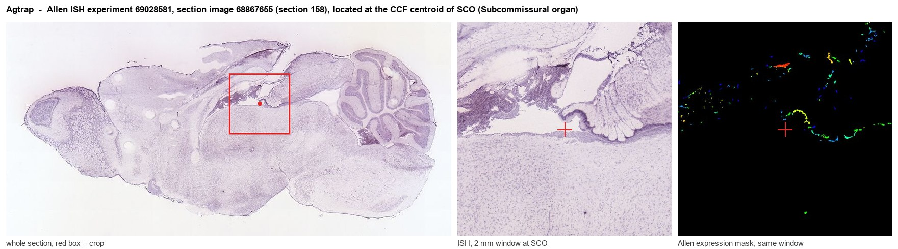

Agtrap
Type-1 angiotensin II receptor-associated protein (AT1 receptor-associated protein)
Spatial tier: REGION_BIASED · Class: GPCR · Top region: SCO (Subcommissural organ) · Positive regions: 43/554
42.0Discovery Score
39.1Targetability Score
CEvidence grade C
What this means: Agtrap: fine CCF profile is region-biased toward SCO (top regions: SCO, OV, MEPO, ME, LM); this is a discovery lead, not direct proof.
Function in SCO: evidence, prediction, innovation
- Gene function
- AGTRAP (ATRAP) is a three-transmembrane intracellular protein that binds the carboxy-terminal tail of the angiotensin II type 1 receptor and promotes its constitutive internalisation, acting as a brake on AT1R signalling. It also interacts with other membrane proteins, including transferrin receptor 1 and the cardiac calcium pump SERCA2a, so it behaves as a general trafficking adaptor.
- Region function
- The subcommissural organ is an ependymal secretory gland in the roof of the third ventricle at the posterior commissure; it secretes SCO-spondin into cerebrospinal fluid to form Reissner's fibre, which contributes to CSF flow, aqueduct patency and axial/neurodevelopmental signalling.
- Published in this region
- inferred No region-specific literature found. The closest brain evidence is from another periventricular/hypothalamic site: Sotozawa 2024 showed that enhancing ATRAP in the paraventricular hypothalamic nucleus suppresses angiotensin II-dependent hypertension by limiting AT1R signalling and sympathetic outflow.
- Predicted function
- Prediction: in subcommissural organ ependymocytes ATRAP would set how strongly these cells respond to CSF and blood-borne angiotensin II by controlling AT1R surface density, tuning secretion of SCO-spondin and local fluid handling in the aqueduct. Over-expressing Agtrap in SCO should dampen angiotensin-evoked calcium signalling and secretion, while knockdown should sensitise the organ to angiotensin, predicted to alter Reissner's fibre output and CSF flow; a hypertension-linked readout (angiotensin-driven drinking or sympathetic tone) is the natural behavioural test.
- Innovation
- ★★★★★ 5/5 Angiotensin signalling in the subcommissural organ, and its adaptor-level regulation, has never been examined even though the organ faces the CSF where angiotensin acts.
- Tools
- Agtrap knockout and tissue-specific transgenic mice; anti-ATRAP antibodies; AT1R antagonists (losartan, candesartan) as pathway context; FoxJ1-CreER and ICV AAV for ependymal targeting.
- References
Direct evidence located at the region

Allen ISH experiment 69028581, section image 68867655 (section 158): the section that contains the CCF centroid of Subcommissural organ according to the Allen image-to-atlas alignment (reference_to_image), with a 2 mm window around that point. Left: whole section, red box = window. Middle: ISH signal. Right: Allen's expression-mask view of the same window. open this image in the Allen viewer
Look it up yourself: Allen Mouse Brain ISH for AgtrapAllen reference atlas: SCO (structure 599626923)ABC Atlas MERFISH viewer(in the ABC Atlas choose dataset MERFISH-C57BL6J-638850-CCF, colour cells by gene "Agtrap" or by parcellation_substructure "SCO")All genes confined to SCO + 3-D brain
Direct spatial evidence
MERFISH REGION LOCATOR

Regional expression figure

Predicted WMB × fine-CCF profile; not direct full-transcriptome spatial measurement.
Spatial profile
Evidence and specificity
- Evidence status
- PREDICTED_FINE
- Direct sources
- None; predicted localization only
- Exclusive threshold
- 12 positive regions out of 554
- Spatial specificity
- 0.280
- Top-region fraction
- 0.042
- Filter status
- PASS
Interpretation limits
- Cell-type-to-region projection is imputed expression, not direct spatial measurement.
- Adult reference atlases do not establish stability across age, sex, strain, state, or disease.
- Transcript abundance does not guarantee protein abundance or genetic-tool performance.